공인중개사-2차 (2010-10-24 기출문제)
1과목: 임의구분
1. 공인중개사법령상 전속중개계약을 체결한 때 중개의뢰인이 비공개를 요청하지 않는 한 중개업자가 공개해야 할 중개대상물에 관한 정보내용이 아닌 것은?
- 지형 등 입지조건
- 중개대상물의 종류
- 공법상의 이용제한에 관한 사항
- 도로 및 대중교통수단과의 연계성
- 소유권자의 주소ㆍ성명 등 인적사항에 관한 정보
(정답률: 50%)

2. 공인중개사법령상 중개대상에 관한 설명으로 옳은 것은?(다툼이 있으면 판례에 의함)
- 점포위치에 따른 영업상의 이점(利點)은 중개대상물이다.
- 명인방법을 갖춘 수목은 중개대상물이 될 수 없다.
- 동산질권은 중개대상이 아니다.
- 아파트에 대한 추첨기일에 신청을 하여 당첨이 되면 아파트의 분양예정자로 선정될 수 있는 지위를 가리키는 입주권도 중개대상물이 된다.
- 20톤 미만의 선박은 중개대상물이 된다.
(정답률: 45%)
3. 공인중개사법령상 포상금제도에 관한 설명으로 옳은 것은?
- 부정한 방법으로 중개사무소의 개설등록을 한 중개업자를 신고하더라도 포상금의 지급대상이 아니다.
- 포상금은 해당 신고사건에 관하여 검사가 불기소처분을 한 경우에도 지급한다.
- 하나의 사건에 대하여 2인 이상이 공동으로 신고한 경우 포상금은 1인당 50만원이다.
- 하나의 사건에 대하여 2건 이상의 신고가 접수된 경우 포상금은 균분하여 지급한다.
- 등록관청은 포상금의 지급결정일부터 1월 이내에 포상금을 지급해야 한다.
(정답률: 44%)
4. 공인중개사법령에서 규정한 과태료 부과처분대상자, 부과금액 기준, 부과권자가 바르게 연결된 것은?
- 중개사무소등록증을 게시하지 않은 중개업자 - 100만원 이하 - 등록관청
- 중개사무소 개설등록이 취소되었으나 중개사무소등록증을 반납하지 않은 중개업자 - 500만원 이하 - 등록관청
- 부동산거래신고 의무가 있음에도 부동산거래신고를 하지 않은 중개업자 - 해당 토지 또는 건축물에 대한 취득세의 3배 이하 상당액 - 국토해양부장관
- 부동산거래정보망 운영규정을 승인받지 않고 부동산거래정보망을 운영한 거래정보사업자 - 100만원 이하 - 신고관청
- 부동산거래신고사항 누락에 따른 거래대금지급증명자료를 제출하지 않은 거래당사자 - 2천만원 이하 - 시ㆍ도지사
(정답률: 53%)
5. 공인중개사법령상 공제사업에 관한 설명으로 틀린 것은?(다툼이 있으면 판례에 의함)
- 협회가 공제사업을 하고자 하는 때에는 공제규정을 제정하여 국토해양부장관의 승인을 얻어야 한다.
- 협회의 공제사업은 비영리사업으로서 회원간의 상호부조를 목적으로 한다.
- 공제규정에는 공제사업의 범위 등 공제사업의 운용에 관하여 필요한 사항을 정해야 한다.
- 중개업자가 자기의 중개사무소를 다른 사람의 중개행위의 장소로 제공함으로써 발생한 거래당사자에 대한 재산상의 손해배상책임은 공제사업의 대상이 아니다.
- 공제규정에서 정해야 할 책임준비금의 적립비율은 공제사고 발생률 및 공제금 지급액 등을 종합적으로 고려하여 공제료 수입액의 100분의 10 이상으로 정한다.
(정답률: 38%)
6. 공인중개사법령상 주거용 건축물의 중개대상물 확인ㆍ설명서 작성방법에 관한 설명으로 옳은 것은?
- 대상물건이 위반건축물인지 여부는 등기부등본을 확인하여 기재한다.
- 환경조건의 “비선호시설”, 입지조건 및 관리에 관한 사항은 매도(임대)의뢰인에게 자료를 요구하여 확인한 사항을 기재한다.
- 매매의 경우 “도시계획시설”, “지구단위계획구역, 그 밖의 도시관리계획”은 중개업자가 확인하여 기재한다.
- 임대차의 경우 “개별공시지가” 및 “건물(주택)공시가격”을 반드시 기재해야 한다.
- 취득시 부담할 조세의 종류 및 세율은 중개가 완성되기 전 ｢지방세법｣의 내용을 확인하여 적어야 하며, 임대차의 경우에도 적어야 한다.
(정답률: 23%)
7. 공인중개사법령상 다음 신청서의 구비서류 중 원본을 첨부해야 하는 경우만을 모두 고른 것은?
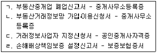
- ㄱ
- ㄱ, ㄴ
- ㄱ, ㄷ
- ㄱ, ㄴ, ㄷ
- ㄴ, ㄷ, ㄹ
(정답률: 34%)
8. 공인중개사법령상 부동산거래정보망의 지정 및 이용 등에 관한 설명으로 옳은 것은?
- 거래정보사업자로 지정받으려는 자는 지정받기 전에 운영규정을 정하여 국토해양부장관의 승인을 얻어야 한다.
- 거래정보사업자로 지정받으려는 자는 그 부동산거래정보망의 가입ㆍ이용신청을 한 중개업자가 1천명 이상이고 10개 이상의 시ㆍ도에서 각각 30인 이상의 중개업자가 가입ㆍ이용신청을 하였을 것이라는 요건을 갖추어야 한다.
- 거래정보사업자로 지정받으려는 자는 부동산거래정보망의 가입자가 이용하는데 지장이 없는 정도로서 국토해양부장관이 정하는 용량 및 성능을 갖춘 컴퓨터설비를 확보해야 한다.
- 거래정보사업자가 정당한 사유 없이 지정받은 날부터 1년 이내에 부동산거래정보망을 설치ㆍ운영하지 아니한 경우 국토해양부장관은 그 지정을 취소해야 한다.
- 거래정보사업자가 중개업자로부터 의뢰받은 정보와 다른 정보를 공개한 경우에는 5백만원 이하의 과태료가 부과된다.
(정답률: 37%)
9. 甲은 2010년 10월 10일 자기 소유의 주택매매와 관련하여 중개업자 乙과 유효기간 5월의 전속중개계약을 체결하였다. 공인중개사법령상 옳은 설명은?
- 전속중개계약의 유효기간은 3월이므로 甲과 乙간의 전속중개계약의 기간은 3월로 단축된다.
- 乙이 전속중개계약서를 보존해야 하는 기간은 5년이다.
- 乙이 일간신문에 중개대상물에 관한 정보를 공개한 경우 지체 없이 甲에게 그 내용을 문서로써 통지해야 한다.
- 甲이 비공개를 요청하지 않는 한 乙은 2010년 10월 20일 이내에 중개대상물에 관한 정보를 공개해야 한다.
- 乙은 甲에게 계약체결 후 2주일에 1회 이상 중개업무처리상황을 통지해야 하며, 그 방법에는 제한이 없다.
(정답률: 39%)
10. 다음 중 공인중개사법령상 실무교육을 의무적으로 받아야 하는 자를 고르면 모두 몇 개인가?
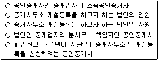
- 1개
- 2개
- 3개
- 4개
- 5개
(정답률: 29%)
11. 공인중개사법령상 공인중개사협회에 관한 설명으로 틀린 것은?
- 설립 및 설립인가의 신청 등에 관하여 필요한 사항은 대통령령으로 정한다.
- 설립인가신청에 필요한 서류는 국토해양부령으로 정한다.
- 협회를 설립하려면 회원 300명 이상의 발기인이 요구된다.
- 협회는 총회의 의결내용을 10일 이내에 국토해양부장관에게 보고해야 한다.
- 협회에 대한 감독을 위하여 협회 사무소에 출입하고자 하는 공무원은 국토해양부령이 정하는 증표를 지니고 상대방에게 내보여야 한다.
(정답률: 40%)
12. 공인중개사법령과 ‘공인중개사의 매수신청대리인 등록 등에 관한 규칙’에 관한 설명으로 틀린 것은?
- 매수신청대리인으로 등록된 중개업자가 매수신청대리의 위임을 받은 경우 ｢민사집행법｣의 규정에 따른 매수신청 보증의 제공을 할 수 있다.
- 매수신청대리인으로 등록한 중개업자는 업무를 개시하기 전에 위임인에 대한 손해배상책임을 보장하기 위하여 보증보험 또는 협회의 공제에 가입하거나 공탁을 하여야 한다.
- 중개업자가 매수신청대리를 위임받은 경우 대상물의 경제적 가치에 대하여 위임인에게 성실ㆍ정확하게 설명해야 한다.
- 중개업자가 매수신청대리 위임계약을 체결한 경우 그 대상물의 확인ㆍ설명서 사본을 5년간 보존해야 한다.
- 중개업과 매수신청대리의 경우 공인중개사인 중개업자가 손해배상책임을 보장하기 위한 보증을 설정해야 하는 금액은 같다.
(정답률: 34%)
13. 공인중개사법령상 다음 ( )안에 들어갈 내용을 순서대로 옳게 연결한 것은?
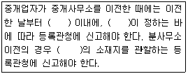
- 10일 - 국토해양부령 - 주된 사무소
- 10일 - 국토해양부령 - 분사무소
- 10일 - 대통령령 - 주된 사무소
- 7일 - 국토해양부령 - 주된 사무소
- 7일 - 대통령령 - 분사무소
(정답률: 37%)
14. 공인중개사법령상 중개업자의 다음 행위 중 중개사무소 개설등록을 반드시 취소해야 하는 것은?
- 중개의뢰인과 직접 거래를 한 경우
- 업무정지기간 중에 중개업무를 한 경우
- 동일 건에 대하여 서로 다른 2 이상의 거래계약서를 작성한 경우
- 중개대상물의 매매를 업으로 하는 행위를 한 경우
- 이동이 용이한 임시 중개시설물을 설치한 경우
(정답률: 39%)
15. 공인중개사법 시행규칙〔별표 1〕에 규정된 공인중개사 자격정지 기준으로 다음 중 옳은 것은 몇 개인가?
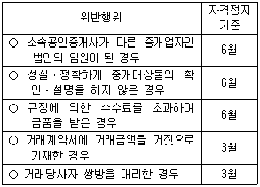
- 1개
- 2개
- 3개
- 4개
- 5개
(정답률: 46%)
16. 공인중개사법령상 인장등록에 관한 설명으로 틀린 것은?
- 등록할 인장은 원칙적으로 가로ㆍ세로 각각 10mm 이상 40mm 이내인 인장이어야 한다.
- 중개업자 및 소속공인중개사는 중개행위를 함에 있어 등록한 인장을 사용해야 한다.
- 분사무소에서 사용할 인장의 경우 ｢상업등기규칙｣ 제36조제4항에 따라 법인의 대표자가 보증하는 인장을 등록할 수 있다.
- 소속공인중개사의 인장등록신고는 당해 소속공인중개사의 고용신고와 같이 할 수 있다.
- 중개업자가 등록한 인장을 변경한 경우 변경일부터 7일 이내에 그 변경된 인장을 등록관청에 등록해야 한다.
(정답률: 32%)
17. 공인중개사법령상 벌칙에 관한 설명으로 틀린 것은?(다툼이 있으면 판례에 의함)
- 양벌규정은 소속공인중개사가 과태료 부과대상인 행위를 한 경우에도 적용된다.
- 등록관청의 관할 구역안에 2 이상의 중개사무소를 둔 공인중개사인 중개업자는 1년 이하의 징역 또는 1천만원 이하의 벌금에 처한다.
- 벌금과 과태료는 병과할 수 없다.
- 거래당사자 쌍방을 대리하는 행위를 한 중개업자는 3년 이하의 징역 또는 2천만원 이하의 벌금에 처한다.
- 중개업자가 중개보조원의 위반행위로 양벌규정에 의하여 벌금형을 받은 경우는 이 법상 ‘벌금형의 선고를 받고 3년이 경과되지 아니한 자’에 해당하지 않는다.
(정답률: 32%)
18. 공인중개사법령상 중개업의 휴업에 관련된 설명으로 틀린 것은?
- 중개업자는 3월을 초과하는 휴업을 하고자 하는 경우 등록관청에 그 사실을 신고해야 한다.
- 휴업기간의 변경신고를 할 경우 중개사무소등록증을 첨부해야 한다.
- 중개업 재개ㆍ휴업기간의 변경신고의 경우 전자문서에 의한 신고도 가능하다.
- 징집으로 인한 입영이 휴업사유인 경우 6월을 초과하여 휴업할 수 있다.
- 중개사무소 재개신고를 받은 등록관청은 반납받은 중개사무소등록증을 즉시 반환해야 한다.
(정답률: 35%)
19. 공인중개사법령상 중개업자의 손해배상책임 등에 관한 설명으로 옳은 것은?(다툼이 있으면 판례에 의함)
- 중개의뢰인에 대한 손해배상책임을 보장하기 위한 공탁은 중개업무 개시와 동시에 하여야 한다.
- 법인 아닌 중개업자가 손해배상책임으로 보증해야 할 금액은 5천만원 이상이어야 한다.
- 공탁금으로 손해배상을 한 중개업자는 30일 이내에 그 부족하게 된 금액을 보전해야 한다.
- 지역농업협동조합이 부동산중개업을 하는 때에는 5백만원 이상의 보증을 설정해야 한다.
- 중개행위에 따른 확인ㆍ설명의무와 그 위반을 이유로 하는 손해배상의무는 중개의뢰인이 중개업자에게 소정의 수수료를 지급하지 아니하였다고 해서 당연히 소멸되는 것은 아니다.
(정답률: 40%)
20. 공인중개사법령상 공인중개사의 자격취소에 관한 설명으로 옳은 것은?
- 시ㆍ도지사는 공인중개사 자격증을 대여한 자의 자격을 취소할 수 있다.
- 공인중개사자격이 취소된 자는 취소된 후 5년이 경과하지 않으면 공인중개사가 될 수 없다.
- 공인중개사가 자격정지처분을 받은 기간 중에 다른 법인인 중개업자의 사원이 되는 경우 자격취소사유에 해당한다.
- 공인중개사자격증 교부 시ㆍ도지사와 중개사무소 소재지 관할 시ㆍ도지사가 다른 경우 자격증 반납은 소재지 관할 시ㆍ도지사에게 하여야 한다.
- 공인중개사자격이 취소된 자는 그 취소처분을 받은 날부터 10일 이내에 자격증을 반납해야 한다.
(정답률: 38%)
21. 공인중개사법령상 중개수수료에 관한 설명으로 옳은 것은?
- 교환계약의 경우 교환대상 중개대상물의 평균가액을 거래금액으로 하여 계산한다.
- 동일한 중개대상물에 대하여 동일 당사자간에 매매와 임대차가 동일기회에 이루어지는 경우 임대차계약에 관한 거래금액으로 하여 계산한다.
- 주택 외의 중개대상물의 중개수수료는 국토해양부령이 정하는 범위 안에서 시⋅도 조례로 정한다.
- 주택 외의 중개대상물의 중개수수료는 거래금액의 1천분의 9 이내에서 쌍방으로부터 각각 받되, 중개의뢰인과 중개업자가 서로 협의하여 결정한다.
- 주택임대차 중개의 경우 중개수수료는 거래금액의 1천분의 9를 받을 수 있다.
(정답률: 38%)
22. 공인중개사법령상 ‘부동산 거래계약 신고서’의 신고대상에 따른 기재사항이 옳게 짝지어진 것을 다음 중 모두 고른 것은?
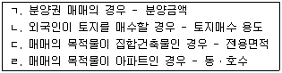
- ㄱ, ㄴ
- ㄱ, ㄴ, ㄷ
- ㄱ, ㄷ, ㄹ
- ㄴ, ㄷ, ㄹ
- ㄱ, ㄴ, ㄷ, ㄹ
(정답률: 34%)
23. 공인중개사법령상 계약금 등의 반환채무이행의 보장에 관한 설명으로 틀린 것은?
- 중개업자가 거래당사자에게 계약금 등을 예치하도록 권고할 법률상 의무는 없다.
- 계약금 등을 예치하는 경우 ｢우체국예금ㆍ보험에 관한 법률｣에 따른 체신관서 명의로 공제사업을 하는 공인중개사협회에 예치할 수도 있다.
- 계약금 등을 예치하는 경우 ｢보험업법｣에 따른 보험회사 명의로 금융기관에 예치할 수 있다.
- 계약금 등을 예치하는 경우 매도인 명의로 금융기관에 예치할 수 있다.
- 계약금 등의 예치는 거래계약의 이행이 완료될 때까지로 한다.
(정답률: 30%)
24. 공인중개사법령상 중개사무소의 설치에 관한 설명으로 옳은 것은?
- 중개사무소 설치기준에 관하여 필요한 사항은 국토해양부령으로 정한다.
- 공인중개사인 중개업자도 책임자를 두는 경우에는 분사무소를 설치할 수 있다.
- 중개업자는 등록관청의 허가를 받아 천막 등 임시 중개시설물을 설치할 수 있다.
- 다른 법의 제한이 없는 경우 법인인 중개업자는 종별이 다른 중개업자와 공동으로 중개사무소를 사용할 수 있다.
- 법인인 중개업자의 분사무소에는 1인 이상의 중개보조원을 두어야 한다.
(정답률: 35%)
25. 공인중개사법령에 관한 설명으로 옳은 것은?(다툼이 있으면 판례에 의함)
- 외국에서 부동산 중개관련자격을 취득한 자는 이 법상 공인중개사가 아니다.
- 모든 중개업자는 중개업을 폐업한 후 다시 개설등록을 할 수 있다.
- 중개행위인지 여부는 중개업자가 진정으로 거래당사자를 위하여 거래를 알선, 중개하려는 의사를 갖고 있었느냐에 의하여 결정된다.
- 중개업자는 중개가 완성되기 전이라도 거래계약서를 작성ㆍ교부할 의무가 있다.
- 이 법은 부동산중개업을 건전하게 지도ㆍ육성하고 부동산중개업무를 적절히 규율함을 목적으로 한다.
(정답률: 42%)
26. 공인중개사법령상 중개사무소개설등록의 결격사유에 해당하지 않는 자는?(문제 오류로 인하여 실제 시험에서는 2, 4번이 정답 처리 되었습니다. 여기서는 2번을 누르시면 정답 처리 됩니다.)
- 미성년자
- 형법상 사기죄로 벌금형을 선고받고 1년이 경과되지 않은 자
- 금고 1년, 집행유예 2년을 선고받고 그 유예기간 중에 있는 자
- 업무정지처분을 받을 당시 중개업자인 법인의 임원이었던 자로서 당해 법인에 대한 업무정지기간 중인 경우
- 파산선고를 받고 복권되지 아니한 자
(정답률: 49%)
27. 공인중개사법령상 부동산중개와 관련된 설명으로 옳은 것(O)과 틀린 것(X)을 바르게 표시한 것은?
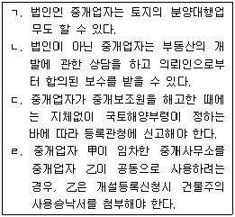
- ㄱ(X), ㄴ(O), ㄷ(X), ㄹ(X)
- ㄱ(X), ㄴ(X), ㄷ(O), ㄹ(O)
- ㄱ(X), ㄴ(O), ㄷ(O), ㄹ(X)
- ㄱ(O), ㄴ(X), ㄷ(O), ㄹ(O)
- ㄱ(O), ㄴ(O), ㄷ(X), ㄹ(X)
(정답률: 38%)
28. 공인중개사법령상 중개사무소의 개설등록에 관한 설명으로 틀린 것은?(다만, 다른 법률의 규정에 의하여 부동산중개업을 할 수 있는 경우를 제외함)
- 중개사무소 개설등록의 기준은 대통령령으로 정한다.
- 중개법인이 되려는 회사가 상법상 유한회사인 경우라도 자본금이 5천만원 이상이어야 한다.
- 중개업자는 중개사무소를 설치할 건물에 관한 소유권을 반드시 확보해야 하는 것은 아니다.
- 부동산중개사무소 개설등록 신청과 인장등록신고를 같이 할 수 있다.
- 중개업자의 결격사유 발생시 중개사무소의 개설등록의 효과는 당연 실효된다.
(정답률: 35%)
29. 중개업자가 분묘와 관련된 토지에 관하여 매수의뢰인에게 설명한 내용으로 옳은 것은?(다툼이 있으면 판례에 의함)
- 가족묘지 1기 및 그 시설물의 총면적은 합장하는 경우 20m2까지 가능하다.
- 최종으로 연장받은 설치기간이 종료한 분묘의 연고자는 설치기간 만료 후 2년 내에 분묘에 설치된 시설물을 철거해야 한다.
- 평장의 경우에도 유골이 매장되어 있는 때에는 분묘기지권이 인정된다.
- 단순히 토지소유자의 설치승낙만을 받아 분묘를 설치한 경우 분묘의 설치자는 사용대차에 따른 차주의 권리를 취득한다.
- 토지소유자의 승낙없이 타인 소유의 토지에 자연장을 한 자는 토지소유자에 대하여 시효취득을 이유로 자연장의 보존을 위한 권리를 주장할 수 없다.
(정답률: 43%)
30. 중개업자 甲이 丁소유의 X토지를 공유하고자 하는 乙과 丙에게 매매계약을 중개하였다. 다음 설명 중 옳은 것을 모두 고른 것은?(다툼이 있으면 판례에 의함)
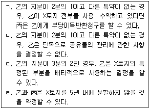
- ㄱ, ㄴ
- ㄴ, ㄹ
- ㄱ, ㄴ, ㄹ
- ㄴ, ㄷ, ㄹ
- ㄱ, ㄴ, ㄷ, ㄹ
(정답률: 34%)
31. 공인중개사법령상 일반중개계약서와 전속중개계약서에 관한 설명으로 틀린 것은?
- 일반중개계약서, 전속중개계약서 서식은 모두 별지 서식으로 정해져 있다.
- 일반중개계약이든 전속중개계약이든 중개계약이 체결된 경우 모두 법정 서식을 사용해야 한다.
- 일반중개계약서의 보존기간에 관한 규정은 없다.
- 일반중개계약서 서식에는 중개의뢰인의 권리ㆍ의무사항이 기술되어 있다.
- 일반중개계약서와 전속중개계약서 서식상의 중개업자의 손해배상책임에 관한 기술 내용은 동일하다.
(정답률: 40%)
32. 부동산경매에 있어서 매각부동산 위의 권리에 관한 설명으로 틀린 것은?(다툼이 있으면 판례에 의함)
- 담보목적이 아닌 최선순위 소유권이전등기청구권보전의 가등기는 매각으로 소멸하지 않는다.
- 매각부동산 위의 모든 저당권과 담보가등기권리는 매각으로 소멸된다.
- 임차건물이 매각되더라도 보증금이 전액 변제되지 않는 한 대항력 있는 임차권은 소멸하지 않는다.
- 최선순위의 전세권으로서 가압류채권에 대항할 수 있는 경우 전세권자가 배당요구를 하더라도 전세권은 매수인이 인수한다.
- 압류의 효력이 발생한 후에 경매목적물의 점유를 취득한 유치권자는 매수인에게 대항할 수 없다.
(정답률: 34%)
33. 중개업자가 중개의뢰인에게 설명한 내용으로 틀린 것은?
- 농지는 자기의 농업경영에 이용하거나 이용할 자가 아니면 소유하지 못함이 원칙이다.
- 공유농지의 분할을 원인으로 농지를 취득하는 경우 농지취득자격증명을 요하지 않는다.
- 농지소유자는 6개월 이상 국외여행중인 경우에 한하여 소유농지를 위탁경영하게 할 수 있다.
- 외국인이 경매로 대한민국 안의 토지를 취득한 때에는 취득한 날부터 6개월 이내에 이를 신고해야 한다.
- 외국인이 상속으로 대한민국 안의 토지를 취득한 후 법정기간 내에 신고하지 않으면 과태료가 부과된다.
(정답률: 36%)
34. 중개업자가 甲소유의 X주택을 乙에게 임대하는 임대차계약을 중개하면서 양 당사자에게 설명한 내용으로 옳은 것은?(다툼이 있으면 판례에 의함)
- 乙이 X주택의 일부를 주거 외의 목적으로 사용하면 주택임대차보호법의 적용을 받지 못한다.
- 임차권등기명령에 따라 등기되었더라도 X주택의 점유를 상실하면 乙은 대항력을 잃는다.
- 乙이 X주택에 대한 대항력을 취득하려면 확정일자를 요한다.
- 乙이 대항력을 취득한 후 X주택이 丙에게 매도되어 소유권이전등기가 경료된 다음에 乙이 주민등록을 다른 곳으로 옮겼다면, 丙의 임차보증금반환채무는 소멸한다.
- 乙이 경매를 통해 X주택의 소유권을 취득하면 甲과 乙사이의 임대차계약은 원칙적으로 종료한다.
(정답률: 25%)
35. 공인중개사법령상 중개대상물 확인ㆍ설명서에 관한 설명으로 틀린 것은?
- 서식은 주거용 건축물, 비주거용 건축물, 토지, 입목ㆍ광업재단ㆍ공장재단용으로 구분되어 있다.
- 소속공인중개사가 당해 중개행위를 한 경우 중개업자와 함께 서명 및 날인해야 한다.
- 매매의 경우 취득시 부담할 조세의 종류 및 세율은 모든 확인ㆍ설명서 서식에 공통으로 기재해야 할 사항이다.
- 비주거용 건축물 서식에는 비선호시설(1km 이내)이 있는지 여부를 표시해야 한다.
- 입목ㆍ광업재단ㆍ공장재단 서식에는 입지조건에 관한 사항의 기재란이 없다.
(정답률: 39%)
36. 중개업자가 부동산경매에 관하여 의뢰인에게 설명한 내용으로 틀린 것은?
- 경매신청이 취하되면 압류의 효력은 소멸된다.
- 매각결정기일은 매각기일부터 1주 이내로 정해야 한다.
- 기일입찰에서 매수신청의 보증금액은 최저매각가격의 10분의 1로 한다.
- 매각허가결정에 대하여 항고하고자 하는 사람은 보증으로 최저매각가격의 10분의 1에 해당하는 금전을 공탁해야 한다.
- 재매각절차에는 종전에 정한 최저매각가격, 그 밖의 매각조건을 적용한다.
(정답률: 24%)
37. 공인중개사법령상 거래계약서와 별지 서식을 작성하는 방법에 관한 설명으로 틀린 것은?
- 중개업자는 거래계약서에 서명 및 날인해야 한다.
- 중개업자는 중개대상물 확인ㆍ설명서에 서명 및 날인해야 한다.
- 중개업자는 전속중개계약서에 서명 및 날인해야 한다.
- 중개대상물 확인ㆍ설명서에는 거래당사자가 서명 또는 날인하는 란이 있다.
- 거래당사자는 거래당사자간 직접거래의 경우 부동산 거래계약 신고서에 공동으로 서명 또는 날인(전자인증 방법 포함)하는 것이 원칙이다.
(정답률: 36%)
38. Y시에 중개사무소를 둔 중개업자 A의 중개로 매도인(甲)과 매수인(乙)간에 X주택을 2억원에 매매하는 계약을 체결하고 동시에 乙이 임차인(丙)에게 X주택을 보증금 3천만원, 월차임 20만원에 임대하는 계약을 체결하였다. A가 乙에게 받을 수 있는 중개수수료의 최고액은?
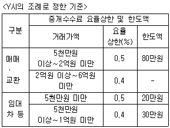
- 80만원
- 95만원
- 100만원
- 102만원
- 125만원
(정답률: 28%)
39. 중개업자 甲이 상가건물임대차보호법령의 적용을 받는 乙소유건물의 임대차계약을 중개하면서 임대인 乙과 임차인 丙에게 설명한 내용으로 틀린 것은 모두 몇 개인가?
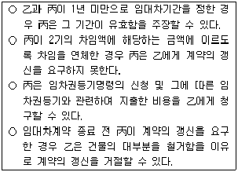
- 없음
- 1개
- 2개
- 3개
- 4개
(정답률: 29%)
40. 중개업자 甲이 주택거래신고지역에 소재하는 X부동산 매매계약을 중개하고 계약서를 작성ㆍ교부하였다. 甲이 중개의뢰인에게 설명한 내용으로 옳은 것은?
- 거래당사자가 공인중개사법령상 X부동산의 거래계약 신고필증을 교부받은 때에는 매수인은 ｢부동산등기 특별조치법｣상 검인을 받은 것으로 본다.
- X가 아파트인 경우 계약당사자는 계약체결일부터 15일 이내에 소재지 관할 시장ㆍ군수 또는 구청장에게 신고해야 한다.
- X의 실제 거래가격이 5억원인 아파트인 경우 매수인은 자금조달계획과 입주계획을 중개업자에게 제공해야 한다.
- X가 농지이고 면적이 1천m2가 넘는 경우라도 농지법상 농지취득자격증명의 발급없이 주말ㆍ체험영농용으로 취득할 수 있는 경우가 있다.
- X가 농지인 경우, 매수인이 X를 주말농장용 농지로 구입하였으나 주말ㆍ체험영농에 이용하지 못하게 된 경우 그 즉시 처분해야 한다.
(정답률: 37%)
2과목: 임의구분
41. 측량ㆍ수로조사 및 지적에 관한 법률에 의한 지목의 종류에 해당하지 않는 것은?
- 비행장용지
- 과수원
- 양어장
- 하천
- 잡종지
(정답률: 50%)
42. 공유지연명부의 등록사항이 아닌 것은?
- 소유권 지분
- 토지의 소재
- 대지권 비율
- 토지의 고유번호
- 토지소유자가 변경된 날과 그 원인
(정답률: 31%)
43. 지적도의 축척이 600분의 1인 지역내 신규등록할 토지의 측정면적을 계산한 값이 325.551㎡인 경우 토지대장에 등록할 면적은?
- 325㎡
- 326㎡
- 325.5㎡
- 325.6㎡
- 325.55㎡
(정답률: 34%)
44. 토지의 조사ㆍ등록 등에 관한 설명으로 틀린 것은?
- 국토해양부장관은 토지의 효율적 관리 등을 위하여 지적재조사사업을 할 수 있다.
- 지적공부에 등록하는 지번ㆍ지목ㆍ면적ㆍ경계ㆍ도로명 및 건물번호의 변경이 있을 때 토지소유자의 신청을 받아 국토해양부장관이 결정한다.
- 지적소관청은 「도시개발법」에 따른 도시개발사업에 따라 새로이 지적공부에 등록하는 토지에 대하여는 경계점좌표등록부를 작성하고 갖춰 두어야 한다.
- 지적소관청은 지번변경의 사유로 지번에 결번이 생긴 때에는 결번대장에 적어 영구히 보존하여야 한다.
- 토지의 지상 경계는 둑, 담장이나 그 밖에 구획의 목표가 될 만한 구조물 및 경계점표지 등으로 표시한다.
(정답률: 40%)
45. 지목의 구분 기준에 관한 설명으로 옳은 것은?
- 연ㆍ왕골 등이 자생하는 배수가 잘 되지 아니하는 토지는 ‘유지’로 한다.
- 천일제염 방식으로 하지 아니하고 동력으로 바닷물을 끌어들여 소금을 제조하는 공장시설물의 부지는 ‘염전’으로 한다.
- 자동차 등의 판매 목적으로 설치된 물류장 및 야외전시장은 ‘주차장’으로 한다.
- 자동차ㆍ선박ㆍ기차 등의 제작 또는 정비공장 안에 설치된 급유ㆍ송유시설의 부지는 ‘주유소용지’로 한다.
- 학교용지ㆍ공원ㆍ종교용지 등 다른 지목으로 된 토지에 있는 유적ㆍ고적ㆍ기념물을 보호하기 위하여 구획된 토지는 ‘사적지’로 한다.
(정답률: 38%)
46. 토지의 이동 신청에 관한 설명으로 틀린 것은?
- 공유수면매립 준공에 의하여 신규등록할 토지가 있는 경우 토지소유자는 그 사유가 발생한 날부터 60일 이내 지적소관청에 신규등록을 신청하여야 한다.
- 임야도에 등록된 토지를 도시관리계획선에 따라 분할하는 경우 토지소유자는 지목변경 없이 등록전환을 신청할 수 있다.
- 토지소유자는 「주택법」에 따른 공동주택의 부지로서 합병할 토지가 있으면 그 사유가 발생한 날부터 60일 이내 지적소관청에 합병을 신청하여야 한다.
- 토지소유자는 토지나 건축물의 용도가 변경되어 지목변경을 하여야 할 토지가 있으면 그 사유가 발생한 날부터 60일 이내 지적소관청에 지목변경을 신청하여야 한다.
- 바다로 되어 말소된 토지가 지형의 변화 등으로 다시 토지가 된 경우 토지소유자는 그 사유가 발생한 날부터 90일 이내 토지의 회복등록을 지적소관청에 신청하여야 한다.
(정답률: 38%)
47. 지적공부에 등록하는 토지의 표시 사항 등에 관한 설명으로 틀린 것은?
- 지적소관청은 지적공부에 등록된 지번을 변경할 필요가 있다고 인정하면 시ㆍ도지사나 대도시 시장의 승인을 받아 지번부여지역의 지번을 새로 부여 할 수 있다.
- 신규등록하고자 하는 대상 토지가 여러 필지로 되어 있는 경우의 지번부여는 그 지번부여지역의 최종 본번 다음 순번부터 본번으로 하여 순차적으로 지번을 부여할 수 있다.
- 지번부여지역의 일부가 행정구역의 개편으로 다른 지번부여지역에 속하게 된 경우 시ㆍ도지사는 개편전 지번부여지역의 지번을 부여하여야 한다.
- 경계점좌표등록부에 등록하는 지역의 1필지 면적이 0.1㎡ 미만일 때에는 0.1㎡로 하며, 임야도에 등록하는 지역의 1필지 면적이 1㎡ 미만일 때에는 1㎡로 한다.
- 도로ㆍ구거 등의 토지에 절토된 부분이 있는 토지의 지상경계를 새로이 결정하고자 하는 경우 그 경사면의 상단부를 기준으로 한다.
(정답률: 33%)
48. 토지의 이동 및 지적정리 등에 관한 설명으로 틀린 것은?
- 지적소관청은 분할ㆍ합병에 따른 사유로 토지의 표시 변경에 관한 등기를 할 필요가 있는 경우 지체 없이 관할 등기관서에 그 등기를 촉탁하여야 한다.
- 지적소관청은 등록전환으로 인하여 토지의 표시에 관한 변경등기가 필요한 경우 그 변경등기를 등기관서에 접수한 날부터 15일 이내 해당 토지소유자에게 지적정리를 통지하여야 한다.
- 지적소관청은 지적공부 정리를 하여야 할 토지의 이동이 있는 경우에는 토지이동정리 결의서를 작성하여야 한다.
- 지적소관청은 토지의 표시에 관한 변경등기가 필요하지 아니한 경우 지적정리의 통지는 지적공부에 등록한 날부터 7일 이내에 토지소유자에게 하여야 한다.
- 지적소관청은 지적공부를 복구하였으나 지적공부 정리내용을 통지받을 자의 주소나 거소를 알 수 없는 경우에는 일간신문, 해당 시ㆍ군ㆍ구의 공보 또는 인터넷홈페이지에 공고하여야 한다.
(정답률: 34%)
49. 지적측량의 적부심사 등에 관한 설명으로 틀린 것은?(관련 규정 개정전 문제로 여기서는 기존 정답인 4번을 누르면 정답 처리됩니다. 자세한 내용은 해설을 참고하세요.)
- 지적측량 적부심사를 청구할 수 있는 자는 토지소유자, 이해관계인 또는 지적측량수행자이다.
- 지적측량 적부심사 청구를 받은 시ㆍ도지사는 30일 이내에 다툼이 되는 지적측량의 경위 및 그 성과 등을 조사하여 지방지적위원회에 회부하여야 한다.
- 지적측량 적부심사를 청구하려는 자는 지적측량을 신청하여 측량을 실시한 후 심사청구서에 그 측량성과와 심사청구 경위서를 첨부하여 시ㆍ도지사에게 제출하여야 한다.
- 지적측량 적부심사 청구서를 회부 받은 지방지적위원회는 부득이한 경우가 아닌 경우 그 심사청구를 회부 받은 날부터 90일 이내에 심의ㆍ의결하여야 한다.
- 지적측량 적부심사 청구자가 지방지적위원회의 의결사항에 대하여 불복하는 경우에는 그 의결서를 받은 날부터 90일 이내에 국토해양부장관에게 재심사를 청구할 수 있다.
(정답률: 35%)
50. 경계점좌표등록부를 갖춰두는 지역의 지적도가 아래와 같은 경우 이에 관한 설명으로 옳은 것은?
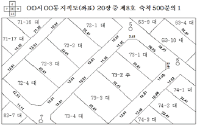
- 73-2에 대한 면적측정은 전자면적측정기에 의한다.
- 73-2의 경계선상에 등록된 ‘22.41’은 좌표에 의하여 계산된 경계점간의 거리를 나타낸다.
- 73-2에 대한 경계복원측량은 본 도면으로 실시하여야 한다.
- 73-2에 대한 토지면적은 경계점좌표등록부에 등록한다.
- 73-2에 대한 토지지목은 ‘주차장’이다.
(정답률: 33%)
51. 지적측량에 관한 설명이다. 옳은 것을 모두 고른 것은?
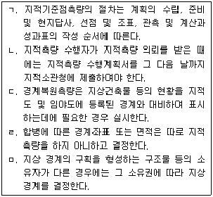
- ㄱ, ㄴ, ㄷ, ㄹ
- ㄱ, ㄴ, ㄷ, ㅁ
- ㄱ, ㄴ, ㄹ, ㅁ
- ㄱ, ㄷ, ㄹ, ㅁ
- ㄴ, ㄷ, ㄹ, ㅁ
(정답률: 27%)
52. 지적공부의 효율적인 관리 및 활용을 위하여 지적정보 전담 관리기구를 설치ㆍ운영하는 자는?
- 읍ㆍ면ㆍ동장
- 지적소관청
- 시ㆍ도지사
- 행정안전부장관
- 국토해양부장관
(정답률: 36%)
53. 부기등기에 관한 설명으로 틀린 것을 모두 고른 것은?
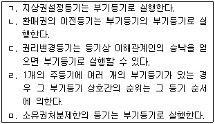
- ㄱ, ㄴ
- ㄴ, ㄷ
- ㄷ, ㄹ
- ㄹ, ㅁ
- ㄱ, ㅁ
(정답률: 24%)
54. 미등기부동산에 대하여 직권에 의한 소유권보존등기를 할 수 있는 경우에 해당하는 것은 모두 몇 개인가?
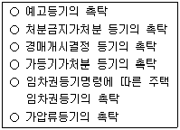
- 1개
- 2개
- 3개
- 4개
- 5개
(정답률: 23%)
55. 등기의 효력에 관한 설명으로 옳은 것은?(다툼이 있으면 판례에 의함)
- 실체적 권리관계의 소멸로 인하여 무효가 된 담보가등기라도 이해관계있는 제3자가 있기 전에 다른 채권담보를 위하여 유용하기로 합의하였다면 그 등기는 유효하다.
- 건물멸실로 무효인 소유권보존등기라도 이해관계있는 제3자가 있기 전 신축건물에 유용하기로 합의한 경우에는 유효하다.
- 甲소유 미등기부동산을 乙이 매수하여 乙명의로 한 소유권보존등기는 무효이다.
- 부동산을 증여하였으나 등기원인을 매매로 기록한 소유권이전등기는 무효이다.
- 토지거래허가구역 내의 토지에 관하여, 중간생략등기의 합의 하에 최초매도인과 최종매수인을 당사자로 하는 토지거래허가를 받아 최초매도인으로부터 최종매수인 앞으로 한 소유권이전등기는 유효하다.
(정답률: 24%)
56. 등기에 관한 설명으로 틀린 것은?
- 여러 동의 건축물이 1개의 건축물대장에 등재된 경우에는 1개의 건물로 보존등기를 하고, 여러 동의 건축물에 상응하는 여러 개의 건축물대장이 작성된 경우에는 그 수만큼 건물보존등기를 하여야 한다.
- 토지의 특정일부에 대한 소유권이전등기를 하려면 반드시 분필등기를 거친 후에 이를 하여야 한다.
- 유증을 원인으로 하는 소유권이전에 있어서, 특정유증은 등기 없이도 물권변동의 효력이 발생한다.
- 원칙적으로 누구든지 부동산에 관한 물권을 명의신탁약정에 의하여 명의수탁자의 명의로 등기하여서는 아니된다.
- 합유등기에 있어서는 등기부상 각 합유자의 지분을 표시하지 아니한다.
(정답률: 20%)
57. 부동산의 신탁등기에 관한 설명으로 틀린 것은?
- 부동산의 신탁등기에 대하여는 수탁자를 등기권리자로 하고 위탁자를 등기의무자로 한다.
- 수익자나 위탁자는 수탁자를 대위하여 신탁의 등기를 할 수 없다.
- 수탁자가 2인 이상이면 그 공동수탁자가 합유관계라는 표시를 신청서에 기재하여야 한다.
- 신탁등기의 신청은 신탁으로 인한 부동산의 소유권이전등기의 신청과 동일한 서면으로써 하여야 한다.
- 신탁등기 신청서에는 신탁의 목적 등 부동산등기법 제123조 소정의 기재사항을 적은 서면을 첨부하여야 한다.
(정답률: 31%)
58. 특례법에 의해 일정한 요건을 갖춘 경우 부동산등기의 대상이 될 수 있는 것은?
- 방조제의 부대시설물인 배수갑문
- 컨테이너
- 옥외 풀장
- 주유소의 닫집(캐노피)
- 개방형 축사
(정답률: 46%)
59. 부동산등기를 신청하는 경우 제출해야 하는 인감증명이 아닌 것은?
- 소유권의 등기명의인이 등기의무자로서 등기신청을 하는 경우 등기의무자의 인감증명
- 건물멸실등기를 신청하는 경우 멸실된 건물 소유자의 인감증명
- 소유권 이외의 권리의 등기명의인이 등기의무자로서 등기필증 대신에 부동산등기법 제49조 소정의 확인서면을 첨부하여 등기를 신청하는 경우 등기의무자의 인감증명
- 협의분할상속등기를 신청하는 경우 분할협의서에 날인한 상속인 전원의 인감증명
- 등기명의인표시의 경정등기를 신청하는 경우 경정 전ㆍ후 동일인임을 증명하는 보증서를 첨부할 때에는 그 보증인의 인감증명
(정답률: 34%)
60. 등기원인서면(증서)에 관한 설명으로 틀린 것은?
- 등기원인서면에 표시된 다수필지 중 일부필지, 공유지분 중 일부지분 등의 등기신청은 수리될 수 없다.
- 등기원인서면은 등기신청시에 항상 제출해야 하는 것은 아니다.
- 등기목적인 부동산이나 등기사항이 기재되어 있지 않은 서면은 등기원인서면에 해당하지 않는다.
- 검인계약서(등기원인증서)의 부동산표시가 등기신청서의 그것과 엄격하게 일치되지 않더라도, 양자 사이에 동일성이 인정되면 등기신청은 수리되어도 무방하다.
- 등기원인서면은 구체적 등기절차에 따라 다르므로 일률적으로 특정된 서면만이라고 할 수는 없다.
(정답률: 27%)
61. 저당권의 등기에 관한 설명으로 틀린 것을 모두 고른 것은?(다툼이 있으면 판례에 의함)
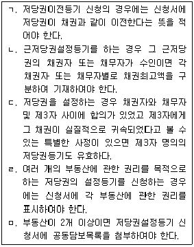
- ㄱ, ㄷ
- ㄴ, ㄹ
- ㄷ, ㅁ
- ㄴ, ㅁ
- ㄱ, ㄹ
(정답률: 21%)
62. 임차권등기명령에 따른 주택임차권등기에서 등기부에 반드시 기록되어야 하는 등기사항이 아닌 것은?
- 임대차계약을 체결한 날
- 임차보증금액
- 임차주택을 점유하기 시작한 날
- 주민등록을 마친 날
- 임대차존속기간
(정답률: 30%)
63. 구분건물의 등기에 관한 설명으로 틀린 것은?
- 상가건물도 일정한 요건을 갖춘 경우에는 구분점포마다 각각의 소유권보존등기를 할 수 있다.
- 구분건물로 될 수 있는 객관적 요건을 갖춘 경우에는 건물소유자는 구분건물로 등기하여야 한다.
- 등기관은 구분건물에 관한 등기신청을 받은 경우 신청서의 첨부서면 또는 공지사실 등에 의하여 그 건물이 구분건물이 아니라는 의심이 있는 경우에는 실질심사권이 있다.
- 집합건물의 규약상 공용부분은 일정한 요건을 갖춘 경우 전유부분으로 소유권보존등기를 할 수 있다.
- 1동의 건물에 속하는 구분건물 중의 일부만에 관하여 소유권보존등기를 신청하는 경우에는 그 나머지 구분건물에 관하여는 표시에 관한 등기를 동시에 신청하여야 한다.
(정답률: 24%)
64. 용익권의 등기에 관한 설명으로 틀린 것은?(다툼이 있으면 판례에 의함)
- 승역지소유자와 요역지소유자 간의 지역권설정 등기에서는 승역지소유자가 등기의무자가 되고 요역지소유자가 등기권리자가 된다.
- 지상권설정등기에서는 토지소유자가 등기의무자가 되고 지상권을 취득하는 자가 등기권리자가 된다.
- 동일토지에 관하여 지상권이 미치는 범위가 각각 다른 2개 이상의 구분지상권은 그 토지의 등기용지에 각기 따로 등기할 수 있다.
- 전세권설정등기 신청의 당사자는 미리 사용자등록을 하지 않더라도 전산정보처리조직을 이용하여 등기를 신청할 수 있다.
- 주택임대차보호법에 의한 임차권등기명령은 판결에 의한 경우에는 선고를 한 때에, 결정에 의한 경우에는 상당한 방법으로 임대인에게 고지를 한 때에 그 효력이 발생한다.
(정답률: 25%)
65. 과세표준과 세액을 정부가 결정하는 때 세액이 확정됨이 원칙이나 납세의무자가 법정신고기간내 이를 신고하는 때에는 정부의 결정이 없었던 것으로 보는 세목은?
- 종합부동산세
- 양도소득세
- 등록세
- 취득세
- 재산세
(정답률: 26%)
66. 국세기본법상 사기나 그 밖의 부정한 행위로 주택의 양도소득세를 포탈하는 경우 국세부과의 제척기간은 이를 부과할 수 있는 날부터 몇 년간인가?(다만, 결정ㆍ판결, 상호합의, 경정청구 등의 예외는 고려하지 않음)
- 3년
- 5년
- 7년
- 10년
- 15년
(정답률: 34%)
67. 지방세법상 취득세의 부과징수에 관한 설명으로 옳은 것은?
- 취득세가 경감된 과세물건이 추징대상이 된 때에는 그 사유발생일부터 30일 이내에 그 산출세액에서 이미 납부한 세액(가산세 포함)을 공제한 세액을 신고ㆍ납부하여야 한다.
- 취득세 납세의무자가 취득일에 등기한 부동산을 그 취득일로부터 2년 이내에 신고ㆍ납부를 하지 않고 매각하는 경우, 산출세액에 100분의 80을 가산한 금액을 세액으로 하여 징수한다.
- 토지의 지목변경에 따라 사실상 그 가액이 증가된 경우, 그 지목변경일부터 2년 이내에 취득세의 신고ㆍ납부를 하지 않고 매각하더라도 취득세 중가산세 규정은 적용되지 아니한다.
- 「지방세법」의 규정에 의하여 기한후 신고를 한 경우, 납부불성실가산세의 100분의 50을 경감한다.
- 취득세의 기한후 신고는 법정신고기한까지 신고한 경우에 한하여 할 수 있다.
(정답률: 29%)
68. 지방세법상 등록세의 과세표준에 관한 설명으로 틀린 것은?
- 부동산에 관한 등록세 과세표준의 신고가 없는 경우, 시가표준액을 과세표준으로 한다.
- 건물을 증축하여 증축한 부분을 보존등기한 경우, 증축에 소요된 비용만이 등록세과세표준이다.
- 채권금액에 의해 과세액을 정하는 경우에 일정한 채권금액이 없을 때에는 채권의 목적이 된 것 또는 처분의 제한의 목적이 된 금액을 그 채권금액으로 본다.
- 상속으로 소유권을 취득한 부동산이 공유물인 때에는 그 취득지분의 가액을 부동산 가액으로 한다.
- 법인이 국가로부터 취득한 부동산은 등기 당시에 자산재평가의 사유로 가액이 증가한 것이 그 법인장부로 입증되더라도 재평가 전의 가액을 과세표준으로 한다.
(정답률: 31%)
69. 지방세법상 부동산의 취득세 과세표준을 사실상의 취득가격으로 하는 경우 이에 포함될 수 있는 항목을 모두 고른 것은?(다만, 아래 항목은 개인이 국가로부터 시가로 유상취득하기 위하여 취득시기 이전에 지급하였거나 지급하여야 할 것으로 가정함)
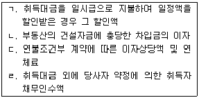
- ㄱ, ㄴ
- ㄱ, ㄷ
- ㄴ, ㄷ
- ㄴ, ㄹ
- ㄷ, ㄹ
(정답률: 34%)
70. 지방세법상 등록세에 관한 설명으로 틀린 것은?
- 부동산을 상호 교환하여 소유권이전등기를 하는 것은 무상승계취득에 해당하는 세율을 적용한다.
- 국가에 귀속을 조건으로 취득하는 부동산의 등기에 대하여는 등록세를 부과하지 아니한다.
- 대한민국 정부기관의 등기ㆍ등록에 대하여 과세하는 외국정부의 등기ㆍ등록의 경우, 등록세를 부과한다.
- 甲소유의 미등기건물에 대하여 乙이 채권확보를 위해 법원의 판결에 의한 소유권보존등기를 甲의 명의로 등기할 경우, 등록세 납세의무는 甲에게 있다.
- 천재 등으로 인한 대체취득에 대하여 취득세가 비과세되는 건축물의 등기에는 등록세를 부과하지 않는다.
(정답률: 27%)
71. 지방세법상 취득세 표준세율의 100분의 500인 중과세율이 적용되는 취득세 과세대상은 다음 중 모두 몇 개인가?(다만, 지방세법상 중과세율의 적용요건을 모두 충족하는 것으로 가정함)
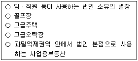
- 1개
- 2개
- 3개
- 4개
- 5개
(정답률: 29%)
72. 지방세법상 재산세의 납세의무자에 관한 설명으로 틀린 것은?
- 재산세 납세의무자인지의 해당여부를 판단하는 기준 시점은 재산세 과세기준일 현재로 한다.
- 재산세과세대상 재산의 공부상 소유자를 그 재산에 대한 재산세 납세의무자로 하는 경우가 있다.
- 재산세과세대상 재산의 사용자를 그 재산에 대한 재산세 납세의무자로 하는 경우가 있다.
- 지방자치단체와 재산세과세대상 재산을 연부로 매매계약을 체결하고 그 재산의 사용권을 무상으로 부여받은 경우, 그 매수계약자를 납세의무자로 한다.
- 재산세과세대상 재산을 여러 사람이 공유하는 경우, 관할 지방자치단체가 지정하는 공유자 중 1인을 납세의무자로 본다.
(정답률: 30%)
73. 지방세법상 재산세에 관한 설명으로 틀린 것은?
- 재산세의 과세표준을 시가표준액에 공정시장가액비율을 곱하여 산정할 수 있는 대상은 토지와 주택에 한한다.
- 지방자치단체가 유료로 공공용에 사용하는 개인 소유의 토지에는 재산세를 부과한다.
- 시장ㆍ군수는 과세대상의 누락으로 인하여 이미 부과한 재산세액을 변경하여야 할 사유가 발생한 때에는 이를 수시로 부과징수할 수 있다.
- 재산세는 법정요건을 충족하면 조례에 의해 표준세율의 100분의 50의 범위 안에서 가감조정할 수 있다.
- 재산세는 법령이 정하는 바에 따라 세부담의 상한이 적용된다.
(정답률: 32%)
74. 지방세법상 다음의 재산세 과세대상 중 가장 낮은 표준세율이 적용되는 것은?
- 별장
- 군(郡)지역에 소재하는 공장용 건축물
- 분리과세대상 고급오락장용 토지
- 고급오락장용 건축물
- 분리과세대상 골프장용 토지
(정답률: 24%)
75. 종합부동산세법상 종합부동산세에 관한 설명으로 틀린 것은?
- 종합부동산세의 과세대상인 주택의 범위는 재산세의 과세대상인 주택의 범위와 다르다.
- 관할세무서장은 종합부동산세로 납부하여야 할 세액이 500만원을 초과하는 경우, 법령에 따라 분납하게 할 수 있다.
- 과세기준일 현재 만 60세 이상인 자가 보유하고 있는 종합부동산세 과세대상인 토지에 대하여는 연령에 따른 세액공제를 받을 수 있다.
- 「지방세법」에 의한 재산세의 감면규정은 종합부동산세를 부과함에 있어서 이를 준용한다.
- 법정요건을 충족하는 1세대1주택자(단독소유임)는 과세기준일 현재 보유기간이 5년 이상이면 보유기간에 따른 세액공제를 받을 수 있다.
(정답률: 32%)
76. 소득세법상 거주자 甲이 특수관계자인 거주자 乙에게 등기된 국내 소재의 건물(주택 아님)을 증여하고 乙이 그로부터 4년 후 그 건물을 甲ㆍ乙과 특수관계 없는 거주자 丙에게 양도한 경우에 관한 설명으로 틀린 것은?
- 乙이 甲의 배우자인 경우, 乙의 양도차익 계산시 취득가액은 甲이 건물을 취득한 당시의 취득가액으로 한다.
- 乙이 甲과 증여당시에는 혼인관계에 있었으나 양도당시에는 혼인관계가 소멸한 경우, 乙의 양도차익 계산시 취득가액은 甲이 건물을 취득한 당시의 취득가액으로 한다.
- 乙이 甲의 배우자인 경우, 건물에 대한 장기보유특별공제액은 건물의 양도차익에 甲이 건물을 취득한 날부터 기산한 보유기간별 공제율을 곱하여 계산한다.
- 乙이 甲의 배우자 및 직계존비속 외의 자인 경우, 乙의 증여세와 양도소득세를 합한 세액이 甲이 직접 丙에게 건물을 양도한 것으로 보아 계산한 양도소득세보다 큰 때에는 甲이 丙에게 직접 양도한 것으로 보지 아니한다.
- 乙이 甲의 배우자인 경우, 건물의 양도소득에 대하여 甲과 乙이 연대납세의무를 진다.
(정답률: 30%)
77. 소득세법상 거주자가 국내 소재 1주택만을 소유하는 경우에 관한 설명으로 틀린 것은?
- 임대한 과세기간종료일 현재 기준시가가 10억원인 1주택(주택부수토지 포함)을 임대하고 지급받은 소득은 사업소득으로 과세된다.
- 양도당시의 실지거래가액이 10억원인 법정요건을 충족하는 등기된 1세대1주택을 양도한 경우, 양도차익에 최대 100분의 80의 보유기간별 공제율을 적용받을 수 있다.
- 甲과 乙이 고가주택이 아닌 공동소유 1주택(甲지분율 40%, 乙지분율 60%)을 임대하는 경우, 주택임대소득의 비과세 여부를 판정할 때 甲과 乙이 각각 1주택을 소유한 것으로 보아 주택 수를 계산한다.
- 법령이 정한 1세대1주택으로서 「건축법」에 의한 건축허가를 받지 아니하여 등기가 불가능한 주택을 양도한 때에는 이를 미등기양도자산으로 보지 아니한다.
- 소유하고 있던 공부상 주택인 1세대1주택을 전부 영업용 건물로 사용하다가 양도한 때에는 양도소득세 비과세 대상인 1세대1주택으로 보지 아니한다.
(정답률: 32%)
78. 소득세법상 거주자의 양도소득세에 관한 설명으로 틀린 것은?
- 법령으로 정하는 근무상 형편으로 취득한 수도권 밖에 소재하는 등기된 주택과 그 밖의 등기된 일반주택을 국내에 각각 1개씩 소유하는 1세대가 일반주택을 양도하는 경우, 법정요건을 충족하면 비과세된다.
- 법령이 정한 장기할부조건부로 부동산을 매매한 경우, 그 취득 및 양도시기는 소유권이전등기접수일ㆍ인도일ㆍ사용수익일 중 빠른 날로 한다.
- 부동산의 양도에 대한 양도소득세를 양수자가 부담하기로 약정한 경우, 양도시기인 대금청산일 판단시 그 대금에는 양도소득세를 제외한다.
- 국내 소재 부동산에 대한 양도소득세는 양도인 소유의 다른 부동산으로 물납할 수 있다.
- 양도소득세 과세대상인 국내 소재의 등기된 토지와 건물을 같은 연도 중에 양도시기를 달리 하여 양도한 경우에도 양도소득기본공제는 연 250만원을 공제한다.
(정답률: 29%)
79. 甲이 2007.3.5. 특수관계자인 乙로부터 토지를 3억1천만원(시가 3억원)에 취득하여 2010.10.5. 甲의 특수관계자인 丙에게 그 토지를 5억원(시가 5억6천만원)에 양도한 경우 甲의 양도소득금액은 얼마인가?(다만, 토지는 등기된 국내 소재의 소득세법상 비사업용토지이고, 취득가액 외의 필요경비는 없으며, 甲ㆍ乙ㆍ丙은 거주자이고, 배우자 및 직계존비속 관계가 없음)
- 1억7천1백만원
- 1억9천만원
- 2억2천5백만원
- 2억5천만원
- 2억6천만원
(정답률: 28%)
80. 소득세법상 거주자의 국내소재 부동산과 ‘부동산에 관한 권리’의 양도에 관한 설명으로 틀린 것은?
- 부동산매매계약을 체결한 거주자가 계약금만 지급한 상태에서 유상으로 양도하는 권리는 양도소득세의 과세대상이다.
- 상속받은 부동산을 양도하는 경우, 기납부한 상속세는 양도차익 계산시 이를 필요경비로 공제받을 수 있다.
- 상속받은 부동산의 취득시기는 상속이 개시된 날로 한다.
- 상속받은 부동산을 양도하는 경우, 양도소득세 세율을 적용함에 있어서 보유기간은 피상속인이 그 부동산을 취득한 날부터 상속인이 양도한 날까지로 한다.
- 부동산을 취득할 수 있는 권리의 양도시 기준시가는 양도일까지 불입한 금액과 양도일 현재의 프레미엄에 상당하는 금액을 합한 금액으로 한다.
(정답률: 27%)
3과목: 임의구분
81. 국토의 계획 및 이용에 관한 법령상의 용어에 관한 설명으로 틀린 것은?
- 도시계획은 도시기본계획과 도시관리계획으로 구분한다.
- 용도지역ㆍ용도지구의 지정 또는 변경에 관한 계획은 도시관리계획으로 결정한다.
- 지구단위계획은 도시관리계획으로 결정한다.
- 도시관리계획을 시행하기 위한 「도시개발법」에 따른 도시개발사업은 도시계획사업에 포함된다.
- 기반시설은 도시계획시설 중 도시관리계획으로 결정된 시설을 말한다.
(정답률: 35%)
82. 국토의 계획 및 이용에 관한 법령상 도시관리계획의 입안에 관한 설명으로 틀린 것은?(관련 규정 개정전 문제로 여기서는 기존 정답인 1번을 누르면 정답 처리됩니다. 자세한 내용은 해설을 참고하세요.)
- 주민은 개발제한구역의 변경에 대하여 입안권자에게 도시관리계획의 입안을 제안할 수 있다.
- 입안권자가 용도지역의 지정에 관한 도시관리계획을 입안하려면 해당 지방의회의 의견을 들어야 한다.
- 도시관리계획의 입안을 제안받은 입안권자는 부득이한 사정이 있는 경우를 제외하고는 제안일부터 60일 이내에 그 제안의 반영여부를 제안자에게 통보하여야 한다.
- 도시관리계획의 입안을 제안받은 입안권자는 제안자와 협의하여 제안된 도시관리계획의 입안 등에 필요한 비용의 전부 또는 일부를 제안자에게 부담시킬 수 있다.
- 국가계획과 관련된 경우에는 국토해양부장관이 직접 도시관리계획을 입안할 수 있다.
(정답률: 39%)
83. 국토의 계획 및 이용에 관한 법령상 제1종지구단위계획의 내용에 반드시 포함되어야 하는 사항이 아닌 것은?
- 건축선에 관한 계획
- 건축물의 건폐율 또는 용적률
- 건축물 높이의 최고한도 또는 최저한도
- 건축물의 용도제한
- 교통처리계획
(정답률: 38%)
84. A시에서 甲이 소유하고 있는 1,000m2의 대지는 제1종일반주거지역에 800m2, 제2종일반주거지역에 200m2씩 걸쳐 있다. 甲이 대지 위에 건축할 수 있는 최대 연면적이 1,200m2일 때, A시 조례에서 정하고 있는 제1종일반주거지역의 용적률은?(다만, 조례상 제2종일반주거지역의 용적률은 200%이며, 기타 건축제한은 고려하지 않음)(오류 신고가 접수된 문제입니다. 반드시 정답과 해설을 확인하시기 바랍니다.)
- 100%
- 120%
- 150%
- 180%
- 200%
(정답률: 36%)
85. 국토의 계획 및 이용에 관한 법령상 장기미집행 도시계획시설부지인 토지에 대한 매수 청구에 관한 설명으로 틀린 것은?
- 해당 부지 중 지목(地目)이 대(垈)인 토지의 소유자는 매수의무자에게 그 토지의 매수를 청구할 수 있다.
- 매수의무자는 매수 청구를 받은 날부터 6개월 이내에 매수 여부를 결정하여 통지하여야 한다.
- 매수의무자가 매수하지 아니하기로 결정한 경우 매수청구자는 개발행위허가를 받아 4층의 다세대주택을 건축할 수 있다.
- 매수의무자가 매수하기로 결정한 토지는 매수결정을 알린 날부터 2년 이내에 매수하여야 한다.
- 지방자치단체인 매수의무자는 토지소유자가 원하는 경우 토지매수대금을 도시계획시설채권을 발행하여 지급할 수 있다.
(정답률: 57%)
86. 국토의 계획 및 이용에 관한 법령상 용도지역ㆍ용도지구ㆍ용도구역에 관한 설명으로 틀린 것은?(오류 신고가 접수된 문제입니다. 반드시 정답과 해설을 확인하시기 바랍니다.)
- 용도지역과 용도지구는 중첩하여 지정될 수 있다.
- 녹지지역과 관리지역은 중첩하여 지정될 수 없다.
- 관리지역이 세부 용도지역으로 지정되지 아니한 경우에 용적률과 건폐율은 생산관리지역에 관한 규정을 적용한다.
- 시ㆍ도지사 또는 대도시 시장은 도시자연공원구역을 도시관리계획 결정으로 지정할 수 있다.
- 농림수산식품부장관은 수산자원보호구역을 도시관리계획 결정으로 지정할 수 있다.
(정답률: 52%)
87. 국토의 계획 및 이용에 관한 법령상 비용부담 등에 관한 설명으로 틀린 것은?
- 행정청이 아닌 자가 도시계획시설사업을 시행하는 경우 그에 관한 비용은 원칙적으로 그 자가 부담한다.
- 행정청이 아닌 도시계획시설사업의 시행자는 당해 사업으로 인하여 현저한 이익을 받은 공공시설의 관리자에 대해서 그 사업비용의 일부를 부담시킬 수 있다.
- 행정청이 아닌 자가 도시계획시설사업을 시행하는 경우 당해 사업비용의 일부를 국가 또는 지방자치단체가 보조하거나 융자할 수 있다.
- 기반시설부담구역에서 200㎡(기존 건축물의 연면적을 포함함)를 초과하는 숙박시설을 증축하는 행위는 기반시설설치비용의 부과대상이다.
- 타인 소유의 토지를 임차하여, 기반시설설치비용이 부과되는 건축행위를 하는 경우에는 그 건축행위자가 설치비용을 납부하여야 한다.
(정답률: 40%)
88. 국토의 계획 및 이용에 관한 법령상 용적률의 최대한도가 높은 지역부터 낮은 지역 순으로 나열한 것은?(다만, 도시계획조례는 고려하지 않음)
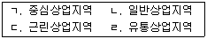
- ㄱ - ㄴ - ㄷ - ㄹ
- ㄱ - ㄴ - ㄹ - ㄷ
- ㄱ - ㄹ - ㄴ - ㄷ
- ㄹ - ㄱ - ㄴ - ㄷ
- ㄹ - ㄱ - ㄷ - ㄴ
(정답률: 39%)
89. 국토의 계획 및 이용에 관한 법령에 의할 때 도시관리계획상 특히 필요한 경우 최장 5년간 개발행위허가를 제한할 수 있는 지역을 모두 고른 것은?
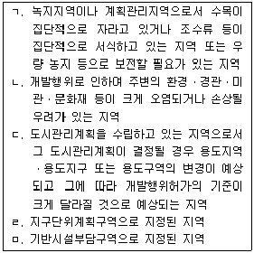
- ㄱ, ㄴ, ㄷ
- ㄱ, ㄴ, ㅁ
- ㄴ, ㄷ, ㄹ
- ㄴ, ㄷ, ㅁ
- ㄷ, ㄹ, ㅁ
(정답률: 34%)
90. 국토의 계획 및 이용에 관한 법령상 토지거래계약허가를 받아야 하는 경우는?(다만, 각 토지의 면적은 3,300㎡임)
- 허가구역에 거주하는 농업인이 그 구역에서 농업을 경영하기 위하여 필요한 토지를 매수하는 경우
- 국세 체납처분에 따라 토지를 취득하는 경우
- ｢민사집행법｣에 따른 경매를 통해 토지를 취득하는 경우
- 공유재산 관리계획에 따라 일반경쟁입찰로 처분하는 공유재산인 토지를 취득하는 경우
- ｢공익사업을 위한 토지 등의 취득 및 보상에 관한 법률｣에 따라 토지를 수용하는 경우
(정답률: 50%)
91. 국토의 계획 및 이용에 관한 법령상 도시계획시설사업의 시행에 관한 설명으로 틀린 것은?
- ｢국토의 계획 및 이용에 관한 법률｣ 또는 다른 법률에 특별한 규정이 있는 경우 외에는 특별시장ㆍ광역시장ㆍ시장 또는 군수가 관할 구역의 도시계획시설사업을 시행한다.
- 시행자는 사업시행을 위하여 특히 필요하다고 인정되면 도시계획시설에 인접한 건축물을 일시 사용할 수 있다.
- 국토해양부장관이 지정한 시행자는 도시계획시설사업 실시계획에 대해 국토해양부장관의 인가를 받아야 한다.
- 사업의 준공예정일을 변경하는 실시계획 변경인가를 하는 경우에는 공고 및 열람을 하지 아니할 수 있다.
- 사업구역경계의 변경이 있더라도 건축물의 연면적 10% 미만을 변경하는 경우에는 실시계획 변경인가를 받을 필요가 없다.
(정답률: 47%)
92. 국토의 계획 및 이용에 관한 법령상 자기의 거주용 주택용지로 이용하기 위해 토지거래계약허가를 받은 자의 토지이용 의무기간은 토지취득시부터 몇 년간인가?(다만, 토지이용의무 적용배제사유는 고려하지 않음)
- 1년
- 2년
- 3년
- 4년
- 5년
(정답률: 32%)
93. 도시개발법령상 도시개발구역을 지정한 후에 개발계획에 포함시킬 수 있는 사항은?
- 환경보전계획
- 재원조달계획
- 도시개발구역 밖의 지역에 기반시설을 설치하여야 하는 경우 그 시설의 설치에 필요한 비용의 부담 계획
- 존치하는 기존 건축물 및 공작물 등에 관한 계획
- 전시장ㆍ공연장 등의 문화시설계획
(정답률: 53%)
94. 도시개발법령상 토지부담률(환지계획구역안의 토지소유자가 도시개발사업을 위하여 부담하는 토지의 비율)에 관한 설명으로 옳은 것을 모두 고른 것은?
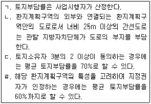
- ㄱ, ㄴ
- ㄱ, ㄷ
- ㄱ, ㄹ
- ㄴ, ㄷ
- ㄷ, ㄹ
(정답률: 38%)
95. 도시개발법령상 도시개발사업의 일부를 환지방식으로 시행하기 위하여 개발계획을 변경할 때 토지소유자의 동의가 필요한 경우는?(다만, 시행자는 국가나 지방자치단체가 아님)
- 너비가 15m인 도로의 변경
- 도시개발구역의 명칭 변경
- 시행자의 변경
- 수용예정인구의 100분의 10 미만의 변경
- 보건의료시설면적 및 복지시설면적의 100분의 10 미만의 변경
(정답률: 47%)
96. 도시개발법령상 도시개발조합에 관한 설명으로 틀린 것은?
- 조합을 설립하려면 도시개발구역의 토지소유자 7명 이상이 정관을 작성하여 지정권자에게 조합설립의 인가를 받아야 한다.
- 조합설립인가를 받은 후 정관기재사항인 주된 사무소의 소재지를 변경하려는 경우에는 지정권자의 변경인가를 받아야 한다.
- 조합의 임원은 그 조합의 다른 임원을 겸할 수 없다.
- 조합에 대해 ｢도시개발법｣에서 규정한 것 이외에는 ｢민법｣ 중 사단법인에 관한 규정을 준용한다.
- 조합인 시행자가 행한 처분에 대하여 행정심판을 제기할 수 있다.
(정답률: 46%)
97. 도시개발법령상 환지계획 및 청산금에 관한 설명으로 옳은 것은?
- 시행자는 면적이 작은 토지라도 환지 대상에서 제외할 수는 없다.
- 시행자는 사업 대상 토지의 소유자가 신청하거나 동의하면 해당 토지에 관한 임차권자의 동의가 없어도 그 토지의 전부 또는 일부에 대하여 환지를 정하지 않을 수 있다.
- 환지계획에서 정하여진 환지는 그 환지처분이 공고된 날부터 종전의 토지로 본다.
- 환지를 정한 경우 그 과부족분에 대한 청산금은 환지처분을 하는 때에 결정하여야 하고, 환지처분이 공고된 날의 다음 날에 확정된다.
- 청산금은 이자를 붙여 분할징수하거나 분할교부할 수 없다.
(정답률: 40%)
98. 도시개발법령상 도시개발채권에 관한 설명으로 옳은 것은?(문제 오류로 인하여 실제 시험에서는 모두 정답 처리 되었습니다. 여기서는 1번을 누르면 정답 처리 됩니다.)
- 도시개발조합은 토지등의 매수대금의 일부를 지급하기 위하여 사업시행으로 조성된 토지ㆍ건축물로 상환하는 도시개발채권을 발행할 수 있다.
- 도시개발채권을 발행하는 경우 발행총액에 대하여 국토해양부장관의 승인을 받아야 한다.
- 도시개발채권의 소멸시효는 상환일부터 기산하여 원금은 5년, 이자는 3년으로 한다.
- 도시개발채권의 상환은 5년부터 10년까지의 범위에서 기획재정부장관이 따로 정하여 고시한다.
- 개발행위허가로서의 토지형질변경허가를 받은 자는 도시개발채권을 매입하여야 한다.
(정답률: 40%)
99. 도시 및 주거환경정비법령상 조합의 설립에 관한 설명으로 ( )에 들어갈 내용은?
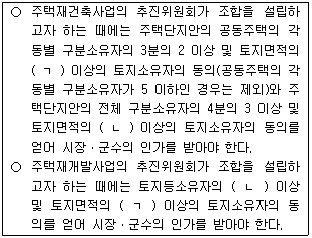
- ㄱ : 3분의 2, ㄴ : 4분의 3
- ㄱ : 2분의 1, ㄴ : 3분의 2
- ㄱ : 3분의 2, ㄴ : 2분의 1
- ㄱ : 2분의 1, ㄴ : 4분의 3
- ㄱ : 4분의 3, ㄴ : 3분의 2
(정답률: 35%)
100. 토지소유자인 甲은 조합설립추진위원회에 주택재개발사업을 위한 조합설립 동의를 하였으나, 조합설립인가 신청 전인 2010.10.1.추진위원회와 인가권자인 시장에게 각각 동의철회서를 발송하였다. 시장은 甲의 철회서가 접수된 사실을 2010.10.5.추진위원회에 통지하였고, 甲이 추진위원회에 발송한 철회서는 2010.10.7.추진위원회에 도달하였다. 이 경우 동의 철회의 효력은 언제부터 발생하는가?(다만, 철회는 적법함을 전제함)
- 2010.10.1.
- 2010.10.5.
- 2010.10.6.
- 2010.10.7.
- 2010.10.8.
(정답률: 41%)
101. 도시 및 주거환경정비법령상 시장ㆍ군수의 허가를 받지 않고 정비구역 안에서 할 수 있는 행위는?
- 경작을 위한 토지의 형질변경
- 공유수면의 매립
- 토지분할
- ｢건축법｣에 따른 건축물의 용도변경
- 죽목의 식재
(정답률: 55%)
102. 도시 및 주거환경정비법령상 주택재건축사업의 관리처분계획에 관한 설명으로 틀린 것은?
- 사업의 시행으로 조성된 대지는 관리처분계획에 의하여 관리하여야 한다.
- 정비구역 지정 후 분할된 토지를 취득한 자에 대하여는 관리처분계획으로 현금 청산할 수 있다.
- 관리처분계획에는 분양대상자별 분양예정인 대지 또는 건축물의 추산액이 포함되어야 한다.
- 주택분양에 관한 권리를 포기하는 토지등소유자에게 임대주택을 공급함에 따라 관리처분계획을 변경하는 경우 조합총회의 의결을 거쳐야 한다.
- 관리처분계획의 변경에 대하여 이해관계가 있는 토지등소유자 전원의 동의를 얻어 관리처분계획을 변경하는 경우에는 시장ㆍ군수에게 신고하여야 한다.
(정답률: 33%)
103. 도시 및 주거환경정비법령상 정비사업의 준공인가 및 이전고시에 관한 설명으로 옳은 것은?
- 정비사업의 시행자가 시장ㆍ군수인 경우에는 정비사업에 관한 공사를 완료한 때에 준공인가를 받아야 한다.
- 시장ㆍ군수는 준공인가 이전에는 입주예정자에게 완공된 건축물을 사용할 것을 사업시행자에게 허가할 수 없다.
- 건축물을 분양받을 자는 사업시행자가 소유권 이전에 관한 내용을 공보에 고시한 날에 건축물에 대한 소유권을 취득한다.
- 정비사업에 의하여 건축물을 분양받을 자에게 소유권을 이전한 경우 종전의 건축물에 설정된 저당권 등 등기된 권리는 소유권을 이전받은 건축물에 설정된 것으로 본다.
- 한국토지주택공사인 사업시행자가 다른 법률에 의하여 자체적으로 준공인가를 처리한 경우에도 시장ㆍ군수가 필요하다고 인정하면 준공검사를 다시 실시할 수 있다.
(정답률: 43%)
104. 도시 및 주거환경정비법령상 정비사업의 청산금에 관한 설명으로 옳은 것은?
- 사업시행자는 정관이나 총회의 결정에도 불구하고 소유권 이전고시 이전에는 청산금을 분양대상자에게 지급할 수 없다.
- 청산금을 지급받을 권리는 소유권 이전고시일 다음 날부터 3년간 이를 행사하지 아니하면 소멸한다.
- 사업시행자는 청산금을 일시금으로 지급하여야 하고 이를 분할하여 지급하여서는 안 된다.
- 정비사업 시행지역 내의 건축물의 저당권자는 그 건축물의 소유자가 지급받을 청산금에 대하여 청산금을 지급하기 전에 압류절차를 거쳐 저당권을 행사할 수 있다.
- 청산금을 납부할 자가 이를 납부하지 아니하는 경우 시장ㆍ군수인 사업시행자는 지방세체납처분의 예에 의하여 이를 징수할 수 없다.
(정답률: 44%)
1⑤. 주택법령상 준주택에 해당하는 것은?
- 여관 및 여인숙
- 제2종 근린생활시설에 해당하지 않는 고시원
- 주택에 해당하지 않는 지역아동센터
- ｢청소년활동진흥법｣에 따른 유스호스텔
- ｢교육기본법｣에 따른 학생복지주택
(정답률: 47%)
106. 주택법령상 주택건설사업계획의 승인을 받은 사업주체에게 인정되는 매도청구권에 관한 설명으로 틀린 것은?
- 매도청구권은 국민주택규모를 초과하는 주택의 주택건설사업에 대해서도 인정된다.
- 주택건설대지 중 사용권원을 확보하지 못한 대지는 물론 건축물에 대해서도 매도청구권이 인정된다.
- 주택건설대지면적 중 100분의 95 이상에 대해 사용권원을 확보한 경우에는 사용권원을 확보하지 못한 대지의 모든 소유자에게 매도청구할 수 있다.
- 사업주체는 매도청구대상 대지의 소유자에게 그 대지를 공시지가로 매도할 것을 청구할 수 있다.
- 매도청구를 하기 위해서는 매도청구 대상 대지의 소유자와 3개월 이상 협의를 하여야 한다.
(정답률: 39%)
107. 주택법령상 주택의 분양가격 제한과 관련된 설명으로 틀린 것은?
- 사업주체가 일반인에게 공급하는 공동주택이라도 도시형 생활주택에 대해서는 분양가상한제가 적용되지 않는다.
- ｢관광진흥법｣에 따라 지정된 관광특구에서 55층의 아파트를 건설ㆍ공급하는 경우 분양가상한제는 적용되지 않는다.
- 사업주체가 공공택지에서 공급하는 주택에 대하여 입주자모집 승인을 받은 경우에는 분양가상한제 적용주택이라도 입주자 모집공고에 분양가격을 공시할 필요가 없다.
- 분양가상한제의 적용에 있어 분양가격 산정의 기준이 되는 기본형건축비는 시장ㆍ군수ㆍ구청장이 해당 지역의 특성을 고려하여 국토해양부령으로 정하는 범위에서 따로 정하여 고시할 수 있다.
- 시장ㆍ군수ㆍ구청장은 분양가격의 제한 및 공시에 관한 사항을 심의하기 위하여 분양가심사위원회를 설치ㆍ운영하여야 한다.
(정답률: 43%)
108. 주택법령상 투기과열지구에 관한 설명으로 옳은 것은?
- 국토해양부장관이 투기과열지구를 지정하거나 해제할 경우에는 관할 시장ㆍ군수ㆍ구청장과 협의하여야 한다.
- 투기과열지구 지정 후 해당 지역의 주택가격이 안정되어 지정 사유가 없어진 경우 해당 지역에 거주하는 법령이 정한 수 이상의 토지소유자는 시ㆍ도지사에게 투기과열지구 지정의 해제를 요청할 수 있다.
- 국토해양부장관은 1년마다 주택정책심의위원회의 회의를 소집하여 투기과열지구로 지정된 지역별로 투기과열지구 지정의 유지 여부를 재검토하여야 한다.
- 투기과열지구에서 제한되는 전매는 상속의 경우를 포함하여 권리의 변동을 수반하는 모든 행위를 말한다.
- 투기과열지구에서 주택의 입주자로 선정된 지위는 이혼으로 인하여 배우자에게 이전이 불가피하고 사업주체의 동의를 받은 경우에도 배우자에게 전매할 수 없다.
(정답률: 38%)
109. 주택법령상 하나의 주택단지로 보아야 하는 것은?
- 폭 12m의 일반도로로 분리된 주택단지
- 고속도로로 분리된 주택단지
- 폭 10m의 도시계획예정도로로 분리된 주택단지
- 자동차전용도로로 분리된 주택단지
- 보행자 및 자동차의 통행이 가능한 도로로서 ｢도로법｣에 의한 지방도로 분리된 주택단지
(정답률: 42%)
110. 주택법령상 주택거래신고에 관한 설명으로 옳은 것은?
- 주택거래신고의 대상은 공동주택으로서 아파트 및 연립주택에 한정된다.
- 신고대상인 거래는 대가에 의하여 소유권을 이전하는 계약으로서 신규로 건설ㆍ공급되는 주택의 신규취득을 포함한다.
- 주택거래계약의 신고는 매수인 또는 매도인이 단독으로 하여야 한다.
- 주택거래신고에 있어 주택거래가액이 5억원인 주택을 거래하는 경우에는 중도금ㆍ잔금 지급일을 신고하지 않아도 된다.
- 관할 시장ㆍ군수 또는 구청장이 주택에 대한 투기가 성행할 우려가 있다고 판단하여 지정을 요청하는 경우 주택거래신고지역으로 지정될 수 있다.
(정답률: 43%)
111. 甲은 50세대로 구성된 세대당 주거전용면적 80m2인 아파트 1채를 분양받아 소유하고 있는 세대주이다. 주택법령상 甲에 관한 설명으로 옳은 것은?(다만, 甲의 주택은「수도권정비계획법」상 수도권지역에 있고, 분양가상한제 적용 대상임)
- 甲의 주택은 도시형 생활주택에 해당한다.
- 甲은 지역주택조합의 조합원 자격이 있다.
- 국민주택을 공급받기 위한 직장주택조합이 아닌 경우에도 甲은 직장주택조합의 조합원 자격이 없다.
- 甲이 자신의 주택에 대한 소유권이전등기를 완료한 날부터 3년간 전매행위가 제한된다.
- 甲의 주택 소재 지역이 주택거래신고지역으로 지정되어 있는 경우에도 甲의 주택의 매매시에는 신고의무가 적용되지 않는다.
(정답률: 32%)
112. 건축법령상 효율적인 에너지관리와 건축 폐자재의 활용을 위하여 국토해양부장관이 정하는 기준이 적용되는 건축물이 아닌 것은?(다만, 각 건축물의 연면적은 500m2 이상임)
- 제1종 근린생활시설 중 목욕장
- 교육연구시설 중 도서관
- 운수시설
- 운동시설 중 수영장
- 종교시설
(정답률: 36%)
113. 건축법령상 피난층 또는 지상으로 통하는 직통계단을 2개소 이상 설치하여야 하는 건축물은?(다만, 각 시설이 위치한 층은 피난층이 아님)
- 거실의 바닥면적의 합계가 200㎡인 노인복지시설이 2층에 있는 건축물
- 거실의 바닥면적의 합계가 200㎡인 종교시설이 지하층에 있는 건축물
- 거실의 바닥면적의 합계가 200㎡인 입원실이 없는 치과병원이 3층에 있는 건축물
- 거실의 바닥면적의 합계가 150㎡인 학원이 3층에 있는 건축물
- 거실의 바닥면적의 합계가 150㎡인 지하층에 주점이 있는 건축물
(정답률: 40%)
114. 건축법령상 도시계획시설예정지에 건축하는 3층 이하의 가설건축물에 관한 설명으로 틀린 것은?(다만, 조례는 고려하지 않음)
- 가설건축물은 철근콘크리트조 또는 철골철근콘크리트조가 아니어야 한다.
- 가설건축물은 공동주택ㆍ판매시설ㆍ운수시설 등으로서 분양을 목적으로 하는 건축물이 아니어야 한다.
- 가설건축물은 전기ㆍ수도ㆍ가스 등 새로운 간선 공급설비의 설치를 필요로 하는 것이 아니어야 한다.
- 가설건축물의 존치기간은 2년 이내이어야 한다.
- 가설건축물은 도시계획예정도로에도 건축할 수 있다.
(정답률: 44%)
115. 건축법령상 건축허가의 제한에 관한 설명으로 옳은 것은?
- 국토해양부장관은 문화체육관광부장관이 문화재보존을 위하여 특히 필요하다고 인정하여 요청한 경우 건축허가를 받은 건축물의 착공을 제한할 수 있다.
- 국토해양부장관은 국토관리를 위하여 특히 필요하다고 인정하더라도 시장ㆍ군수ㆍ구청장의 건축허가를 제한할 수 없다.
- 건축허가를 제한하는 경우 제한기간은 2년 이내로 하며, 그 기간은 연장할 수 없다.
- 시ㆍ도지사가 시장ㆍ군수ㆍ구청장의 건축허가를 제한한 경우 국토해양부장관에게 보고하여야 하며, 국토해양부장관은 보고받은 내용을 공고하여야 한다.
- 시ㆍ도지사는 시장ㆍ군수ㆍ구청장의 건축허가 제한이 지나치다고 인정하면 직권으로 이를 해제할 수 있다.
(정답률: 46%)
116. 건축법령상 시장ㆍ군수가 건축허가를 하기 위해 도지사의 사전승인을 받아야 하는 건축물은?
- 연면적의 10분의 2를 증축하여 층수가 21층이 되는 공장
- 연면적의 합계가 100,000㎡인 창고
- 자연환경을 보호하기 위하여 도지사가 지정ㆍ공고한 구역에 건축하는 연면적의 합계가 900㎡인 2층의 위락시설
- 주거환경 등 주변환경을 보호하기 위하여 도지사가 지정ㆍ공고한 구역에 건축하는 숙박시설
- 수질을 보호하기 위하여 도지사가 지정ㆍ공고한 구역에 건축하는 연면적의 합계가 900㎡인 2층의 숙박시설
(정답률: 44%)
117. 건축법령상 대지A의 건축선을 고려한 대지면적은?(다만, 도로는 보행과 자동차 통행이 가능한 통과도로로서 법률상 도로이며, 대지A는 도시지역이 아님)(문제 오류로 인하여 실제 시험에서는 3, 5번이 정답 처리 되었습니다. 여기서는 3번을 누르시면 정답 처리 됩니다.)
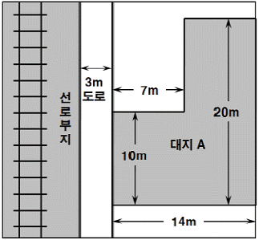
- 170㎡
- 180㎡
- 200㎡
- 2⑤㎡
- 210㎡
(정답률: 49%)
118. 건축법령상 건축물의 면적, 층수 등의 산정방법에 관한 설명으로 틀린 것은?
- 건축물의 1층이 차량의 주차에 전용(專用)되는 필로티인 경우 그 면적은 바닥면적에 산입되지 아니한다.
- 층고(層高)가 2m인 다락은 바닥면적에 산입된다.
- 용적률을 산정할 때에는 초고층 건축물의 피난안전구역의 면적은 연면적에 포함시키지 아니한다.
- 층의 구분이 명확하지 않은 건축물은 건축물의 높이 4m마다 하나의 층으로 보고 층수를 산정한다.
- 주택의 발코니의 바닥은 전체가 바닥면적에 산입된다.
(정답률: 38%)
119. 농지법령상 농지소유상한에 관한 내용 중 ( )안에 들어갈 내용은?(다만, 농지 소유자가 농지법령에 따라 농지를 임대하거나 사용대(使用貸)하는 경우는 제외함)
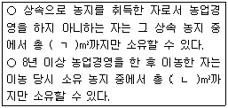
- ㄱ : 5,000 ㄴ : 5,000
- ㄱ : 10,000 ㄴ : 5,000
- ㄱ : 10,000 ㄴ : 10,000
- ㄱ : 30,000 ㄴ : 10,000
- ㄱ : 30,000 ㄴ : 30,000
(정답률: 41%)
120. 농지법령상 농지의 대리경작 및 임대차에 관한 설명으로 틀린 것은?
- 유휴농지의 대리경작 기간은 따로 정하지 아니하면 1년으로 한다.
- 농업경영을 하려는 자에게 농지를 임대하는 경우 서면 계약을 원칙으로 한다.
- 임대 농지의 양수인은 「농지법」에 따른 임대인의 지위를 승계한 것으로 본다.
- 지력의 증진을 위하여 필요한 기간 동안 휴경하는 농지에 대하여는 대리경작자를 지정할 수 없다.
- 자기의 농업경영을 위해 농지를 소유하는 자는 주말ㆍ체험영농을 하려는 자에게 임대하는 것을 업(業)으로 하는 자에게 자신의 농지를 임대할 수 없다.
(정답률: 36%)